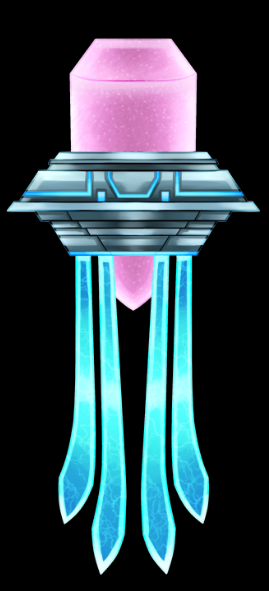
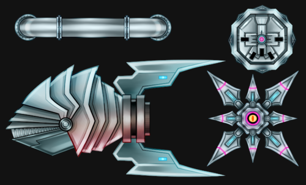
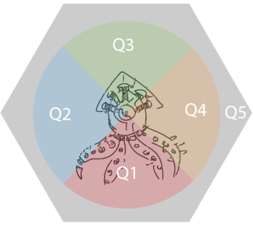

Early on, our goal was to add three new mini-enemies to scatter around the levels. They should be unique, interesting, and add a specific challenge. A bunch of brainstorming was done, so that we had a couple different enemies to choose between. Here are our brief initial thoughts on each one.
SandDollar - Stationary enemy that explodes when player enters collision box attached to the prefab. Plays explosion VFX, damages surrounding walls (radius on a public variable), and applies force to player in the opposite direction (force on a public variable).
Jellyfish - Floating enemy that bobs up and down (distance and speed of bob on public variables). The enemy should float between two set locations on loop (movement speed as a public variable). If the player collides with jellytentacles they take x damage and the player disconnects from any grabbed surface and can't use their tentacles for x seconds. Cannot currently be destroyed.
Piranha - A swarm enemy that will chase after the player and chip away their health. These enemies have collision boxes and can push the player around. They have little health and can be killed with two uncharged laser shots.
State: Seeking - The swarm will seek out the player once the player enters a specific collision box. They will continue to chase the player outside of the collision box once locked on. The speed that they search out the player should be a public variable. There should be a “front” to the enemy which points at the player at all times (that way the “Face” of the piranha is the one colliding with the player). If the piranha collides with the player it should do x damage (variable) and then back off for x seconds (variable), until trying to collide (attack) again.
State: Roaming - The enemies will “float” around inside a specified area randomly. The speed and distance which they roam should be public variables.
In addition to these new enemies, Josh and I also began designing the boss sequence. First, we needed to figure out how the boss would be defeated - and the steps the player needs to take to get there. The boss will have multiple phases, and the player will need to release starfish that are in capsules attached to it's head. After releasing the starfish, the shield on the boss drops and allows the player to shoot it in the weak point - the eye. They also get to tear a tentacle off the boss, sending it to it's next phase. The fight overview goes as follows:
BOSS STRUCTURE:
Phase 1: Pull Lid 1, Laser Eye, Pull Lid 2, Laser Eye, S4 gets stunned, Pull off tentacle.
Phase 2: Pull Lid 3, Laser Eye, Pull Lid 4, Laser Eye, S4 gets stunned, Pull off tentacle.
Intermission: Player Rest - S4 Feigns Death - Enter Rage Mode - Enter Phase 3.
Phase 3: Pull Lid 5, Laser Eye (Eye gets destroyed).
Escape: Start self destruct sequence - Get out of the ship!
The boss also needs to react based on the players location, so we designed a quadrant based system, so that specific attacks can activate based on the players location to the boss. A lot of work still needs to be done, but this is a good headstart.
Thanks for reading! Connect with us on Twitter, Facebook, or YouTube. To make sure you stay up to date, sign up for our email list!